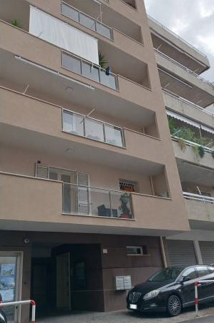
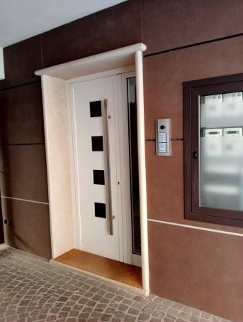
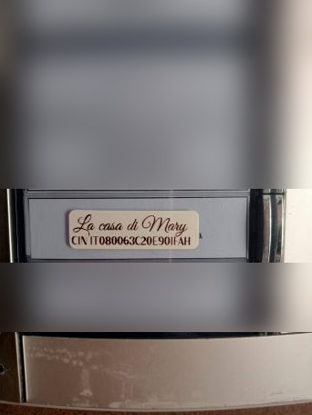
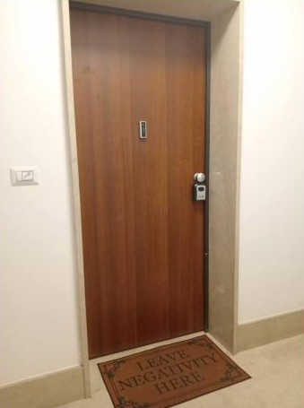
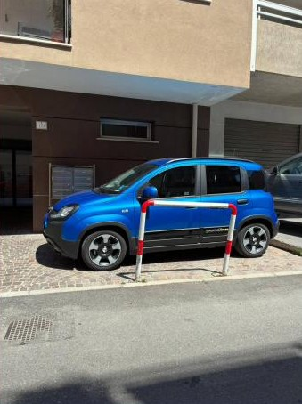

Italiano
English
Français
Deutsch
✦ ✦ ✦ ✦ ✦
La Casa di Mary
Self Check-in
Via Sbarre Inferiori, 131 · Reggio Calabria
Posizione
Come arrivare
Apri in Maps
1
Tappa 1
Il palazzo

2
Tappa 2
Entra nel palazzo

3
Tappa 3
Il citofono

4
Tappa 4
Sali al primo piano

5
Tappa 5
Apri con la keybox
6
Tappa 6
Parcheggio

Avvisami
WhatsApp